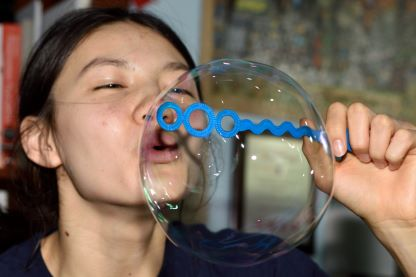

Break Through
As part of my AHS (Art, Humanities, and Social Sciences) Capstone, I wrote
a creative writing booklet centered around the theme of breaking through the
shields we put up and the bubbles enclosing us. The stories range from creative
nonfiction to magical realism. Each piece is matched with a writing prompt and
some related recipes.
All You Can Eat
“All You Can Eat” is a storytelling project that I worked on in my
Connecting with Stories course. The piece describes my relationship
with hiking and how it developed during the COVID-19 pandemic. I
performed my story during one of Olin’s community writing workshops.
Short Narrative Portfolio
In my Short Narrative class, I wrote several creative writing pieces.
My portfolio consists of four flash fiction pieces (three of which form a triptych),
one short-short story, and one short story.
The Storytelling of Vivian Maier
I wrote a homage to my favorite photographer Vivian Maier.
Vivian Maier was an American street photographer, active from
1950 to the mid-1970s, who received posthumous fame for her
thoughtful photographs. The image above is a self-portrait I
took in honor of Vivian Maier’s enigmatic self-portraits.